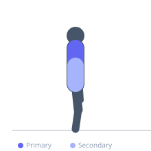
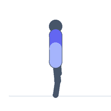

Exercise guide / Wall Angel
Wall Angel
The wall angel is a postural rehabilitation drill that trains the ability to elevate the arms overhead while maintaining contact between the head, upper back, and arms with a wall. It simultaneously strengthens the lower trapezius and serratus anterior while stretching the pectoral muscles and improving thoracic extension. It is frequently prescribed for forward head posture, rounded shoulders, and thoracic kyphosis correction.
Primary muscles
lower trapezius
serratus anterior
Secondary muscles
middle trapezius
erector spinae
Stabilizers
transverse abdominis
Equipment
No Equipment (Bodyweight)


Starting position
- Stand with the back flat against a wall, feet approximately 15–30 cm from the base, knees slightly bent. The head, upper back, and both elbows make contact with the wall.
Setup
- Stand against a smooth wall with enough room to slide arms overhead. If the low back arches significantly off the wall, bend the knees more.
Steps
- Step 1: Stand against the wall with head, upper back, and both elbows (bent to 90 degrees) touching the wall.
- Step 2: The low back should maintain a natural curve — do not force it flat but do prevent excessive arch.
- Step 3: Slowly slide both arms upward along the wall, maintaining contact with the wall with the elbows and forearms.
- Step 4: Slide as high as the shoulder mobility and wall contact allow.
- Step 5: Slowly slide back down to the starting position with the same wall contact maintained.
Coaching cues
- Keep the elbows glued to the wall the entire time
- Feel your shoulder blades slide down your back as your arms go up
- Breathe out through the effort of maintaining wall contact
Breathing
- Exhale as arms slide up. Inhale on the way down.
Range of motion
- Slide as high as possible while maintaining elbow and forearm contact with the wall. Many beginners cannot get past shoulder height initially.
Tempo
- 3 seconds up, 2-second hold at top, 3 seconds down. 10–15 reps × 2–3 sets.
Common mistakes
- Losing elbow or wrist contact with the wall as the arms rise — this is the main challenge
- Excessive lower back arch pushing the ribcage forward
- Shrugging the shoulders — focus on depression throughout the upward slide
Safety
- This drill is safe for most populations
- If shoulder impingement symptoms occur, reduce the overhead range before full clearance
Training
- strength: 10–15 reps
- strength: 2–3 sets
- Rest: {'strength': 60}